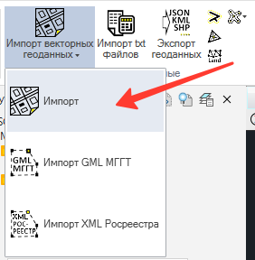
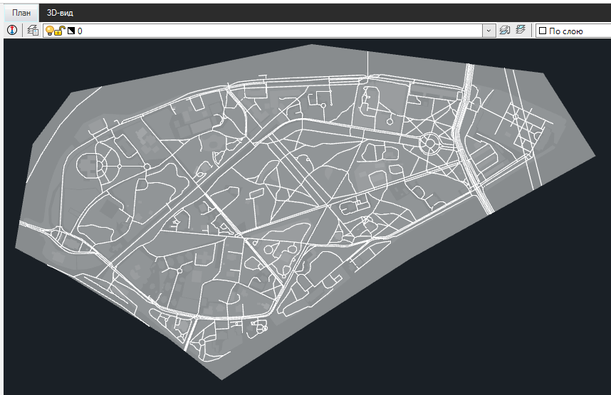

Импорт векторных геоданных
Импорт

Настройки импорта задаются в диалоговом окне для импорта векторных геоданных общего вида.
Геометрия пересчитывается для указанных систем координат и импортируется по следующим правилам, как объекты чертежей Robur (подобны CAD- объектам).
- "Point" - в виде обычных точек Robur (описываются классом DwgPoint);
- "MultiPoint" - в виде набора обычных точек Robur;
- "LineString" - если 2 вершины, то в виде отрезка (DwgLine), если вершин > 2 и среди отметок Z имеются более одной разных, то в виде 3D-полилинии из плоских сегментов (DwgPolyline3D), в противном случае в виде обычной полилинии на заданной отметке Z (DwgPolyline);
- "MultiLineString" - в виде набора разных линий по правилам для каждой "LineString" в отдельности;
- "Polygon" - в виде штриховки с внешним контуром и внутренними островками (при наличии у полигона внутренних границ);
- "MultiPolygon" - в виде штриховки, каждый отдельный Polygon - в виде отдельных внешнего и внутренних контуров;
- "GeometryCollection" - каждый объект по правилам выше;
Примечание: трехмерные представления геометрии в виде TIN, POLYHEDRALSURFACE преобразуются к виду MultiPolygon. Если геометрия топологически-корректна, то импортируется в виде набора отдельных 3D-граней. В противном случае - в виде отдельных точек с потерей всех рёбер триангуляции.
Примечание: штриховками задается прозрачность 92%. Для удобства визуальной идентификации наложенных контуров.
Импортированные данные выглядят так:

Для наборов геометрий ("MultiPoint", "MultiLineString", "GeometryCollection") атрибуты группы копируются в каждый из объектов. Атрибуты доступны к отображению через команду "Показать атрибуты" с панели "Атрибутика".
Импорт МГГТ
См. пояснение к функции тут.
Импорт XML Росреестра
См. пояснение к функции тут.